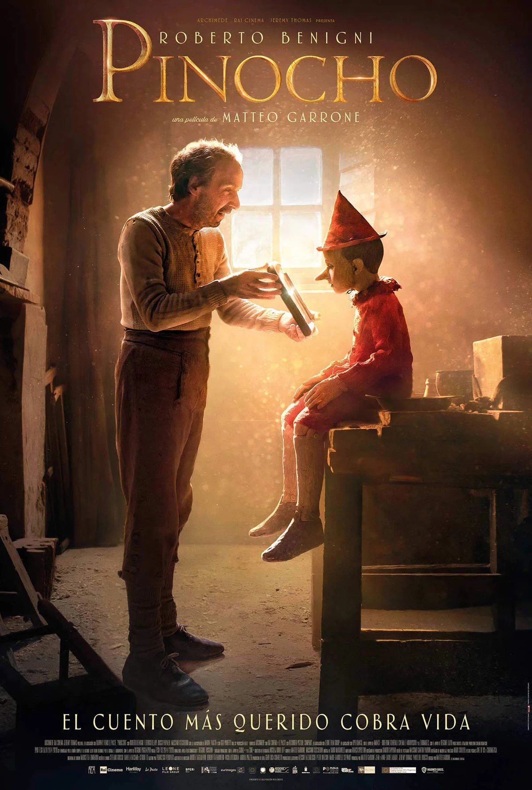
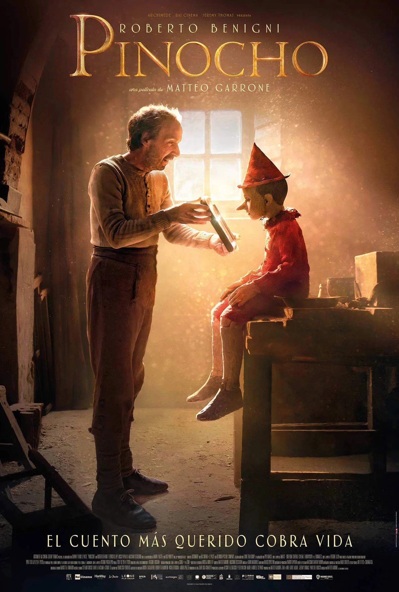
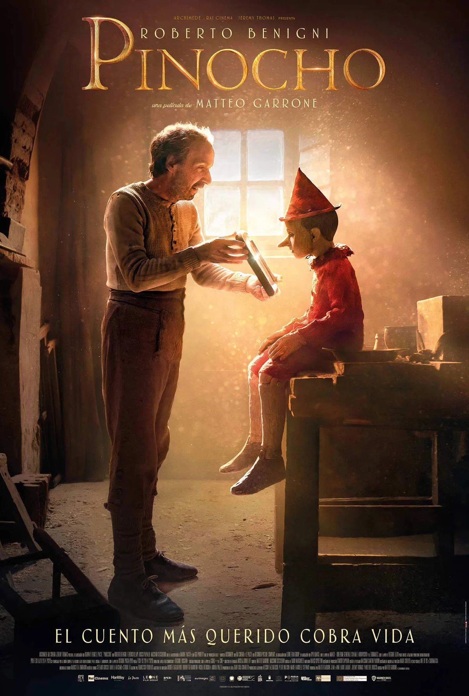

10 Peliculas con mayor recaudacion (Infantiles)
1. ZOTOOPIA (2016)
2. PINOCHO (2020)

3. TOY STORY (1996)
4. THE AVENGERS: LOS VENGADORES (2012)
5. Wall-E (2008)
6. MONSTERS (2001)
7. SPIDER-MAN: DE REGRESO A CASA (2017)
8. LA ERA DE HIELO (2002)
9. SHREK (2001)
10. UP:UNA AVENTURA DE ALTURA (2009)
 
